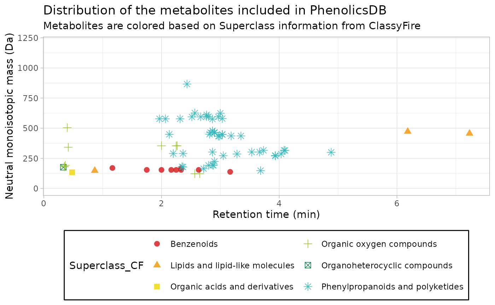

2 - Content description of the Phenolics MS/MS repository
Cristian Quiroz-Moreno, Jessica Coopestone
Horticulture and Crop Science Department, Ohio State University, USquirozmoreno.1@osu.edu
4 October 2023
Source:vignettes/Content.Rmd
Content.RmdPackage content description
This package is intended to archive the raw .mzml files
of authentic standards, as well as structured data frames aimed to be
used jointly with MS2extract, to
automate the process of creating in-house MS/MS libraries.
This database contains majorly phenolics compounds, aimed to decipher and annotate the Rosacea metabolome. However, as phenolics are expressed almost ubiquitously found in plants, this database can be used in multiples scenarios where researchers think there are potential matching with the metabolites present in this database.
We grouped the total database in two batches. The batches are based on the instrument we used to acquire the MS/MS data. For the first batch, we used an Agilent QTOF 6545, and for the second batch, we used an Agilent QTOF 6546. In both batches, we collected targeted MS/MS using the chromatographic method reported in Bilbrey at al. (2022). We collected the data in negative and positive polarity, and we used 20 and 40 eV (CE) using collision induced dissociation (CID). Additionally, in the second batch, we also collected data at 60 and 80 eV (CE). The following table describe how you can retrieve the tables for importing the data, and the metadata attached to each metabolite.
Again, this data package is intended to work with MS2extract, as its structure meets the requirements in MS2extract.
First Batch (Agilent QTOF 6545)
| Polarity | Collision Energy (eV) | read_dt table | metadata table |
|---|---|---|---|
| Positive | 20 | data("read_pos20_6545") |
data("metdt_pos20_6545") |
| Positive | 40 | data("read_pos40_6545") |
data("metdt_pos40_6545") |
| Negative | 20 | data("read_neg20_6545") |
data("metdt_neg20_6545") |
| Negative | 40 | data("read_neg40_6545") |
data("metdt_neg40_6545") |
Second Batch (Agilent QTOF 6546)
| Polarity | Collision Energy (eV) | read_dt table | metadata table |
|---|---|---|---|
| Positive | 20 | data("read_pos20_6546") |
data("metdt_pos20_6546") |
| Positive | 40 | data("read_pos40_6546") |
data("metdt_pos40_6546") |
| Positive | 60 | data("read_pos6080_6546") |
data("metdt_pos60_6546") |
| Positive | 80 | data("read_pos6080_6546") |
data("metdt_pos80_6546") |
| Negative | 20 | data("read_neg20_6546") |
data("metdt_neg20_6546") |
| Negative | 40 | data("read_neg40_6546") |
data("metdt_neg40_6546") |
| Negative | 60 | data("read_neg60_6546") |
data("metdt_neg60_6546") |
| Negative | 80 | data("read_neg80_6546") |
data("metdt_neg80_6546") |
List of metabolites
In the extdata directory you will find all the
.mzml files for all standards, as well as the structure
tables to be used jointly with MS2extract.
In the following table you can see the list of metabolites we are including in this version of the database, as well as in what batch you will find them.
Disclaimer: Metabolites with no reported data file have not MS/MS data
#> # A tibble: 70 × 6
#> Name Formula min_rt max_rt COLLISIONENERGY Batch
#> <chr> <chr> <dbl> <dbl> <chr> <chr>
#> 1 Procyanidin A2 C30H24O12 163 180 20 eV (1) QTOF-6…
#> 2 Rutin C27H30O16 162 171 20 eV (1) QTOF-6…
#> 3 3-Hydroxybenzaldehyde C7H6O2 152 166 20 eV (1) QTOF-6…
#> 4 4-Hydroxybenzaldehyde C7H6O2 137 170 20 eV (1) QTOF-6…
#> 5 Salycilic acid C7H6O3 180 200 20 eV (1) QTOF-6…
#> 6 Malic acid C4H6O5 16 42 20 eV (1) QTOF-6…
#> 7 (E)-Cinamic acid C9H8O2 214 228 20 eV (1) QTOF-6…
#> 8 2-3-Dihydroxybenzoic acid C7H6O4 135 146 20 eV (1) QTOF-6…
#> 9 2-5-Dihydroxybenzoic acid C7H6O4 120 140 20 eV (1) QTOF-6…
#> 10 2-6-Dihydroxybenzoic acid C7H6O4 120 150 20 eV (1) QTOF-6…
#> # ℹ 60 more rowsPhytochemicals in two dimensions
As it was explained above, the chromatographic method employed for the LC separation is described in Bilbrey at al. (2022).
Therefore, we can display where each phytochemical elutes in terms of retention time and m/z.

Information about this vignette
Code for creating the vignette
## Create the vignette
library("rmarkdown")
system.time(render("Content.Rmd", "BiocStyle::html_document"))
## Extract the R code
library("knitr")
knit("Content.Rmd", tangle = TRUE)Date the vignette was generated.
#> [1] "2023-10-04 16:45:17 UTC"Wallclock time spent generating the vignette.
#> Time difference of 2.293 secsR session information.
#> ─ Session info ───────────────────────────────────────────────────────────────────────────────────────────────────────
#> setting value
#> version R version 4.3.1 (2023-06-16)
#> os Ubuntu 22.04.3 LTS
#> system x86_64, linux-gnu
#> ui X11
#> language en
#> collate C.UTF-8
#> ctype C.UTF-8
#> tz UTC
#> date 2023-10-04
#> pandoc 2.19.2 @ /usr/bin/ (via rmarkdown)
#>
#> ─ Packages ───────────────────────────────────────────────────────────────────────────────────────────────────────────
#> package * version date (UTC) lib source
#> backports 1.4.1 2021-12-13 [1] RSPM
#> bibtex 0.5.1 2023-01-26 [1] RSPM
#> BiocManager 1.30.22 2023-08-08 [1] RSPM
#> BiocStyle * 2.28.1 2023-09-14 [1] Bioconductor
#> bookdown 0.35 2023-08-09 [1] RSPM
#> bslib 0.5.1 2023-08-11 [1] RSPM
#> cachem 1.0.8 2023-05-01 [1] RSPM
#> cli 3.6.1 2023-03-23 [1] RSPM
#> colorspace 2.1-0 2023-01-23 [1] RSPM
#> desc 1.4.2 2022-09-08 [1] RSPM
#> digest 0.6.33 2023-07-07 [1] RSPM
#> dplyr * 1.1.3 2023-09-03 [1] RSPM
#> evaluate 0.22 2023-09-29 [1] RSPM
#> fansi 1.0.4 2023-01-22 [1] RSPM
#> farver 2.1.1 2022-07-06 [1] RSPM
#> fastmap 1.1.1 2023-02-24 [1] RSPM
#> fs 1.6.3 2023-07-20 [1] RSPM
#> generics 0.1.3 2022-07-05 [1] RSPM
#> ggplot2 * 3.4.3 2023-08-14 [1] RSPM
#> ggsci 3.0.0 2023-03-08 [1] RSPM
#> glue 1.6.2 2022-02-24 [1] RSPM
#> gtable 0.3.4 2023-08-21 [1] RSPM
#> htmltools 0.5.6 2023-08-10 [1] RSPM
#> httr 1.4.7 2023-08-15 [1] RSPM
#> jquerylib 0.1.4 2021-04-26 [1] RSPM
#> jsonlite 1.8.7 2023-06-29 [1] RSPM
#> knitr 1.44 2023-09-11 [1] RSPM
#> labeling 0.4.3 2023-08-29 [1] RSPM
#> lifecycle 1.0.3 2022-10-07 [1] RSPM
#> lubridate 1.9.3 2023-09-27 [1] RSPM
#> magrittr 2.0.3 2022-03-30 [1] RSPM
#> memoise 2.0.1 2021-11-26 [1] RSPM
#> munsell 0.5.0 2018-06-12 [1] RSPM
#> pillar 1.9.0 2023-03-22 [1] RSPM
#> pkgconfig 2.0.3 2019-09-22 [1] RSPM
#> pkgdown 2.0.7 2022-12-14 [1] any (@2.0.7)
#> plyr 1.8.9 2023-10-02 [1] RSPM
#> purrr 1.0.2 2023-08-10 [1] RSPM
#> R6 2.5.1 2021-08-19 [1] RSPM
#> ragg 1.2.5 2023-01-12 [1] RSPM
#> Rcpp * 1.0.11 2023-07-06 [1] RSPM
#> Rdisop * 1.60.0 2023-04-25 [1] Bioconductor
#> RefManageR * 1.4.0 2022-09-30 [1] RSPM
#> rlang 1.1.1 2023-04-28 [1] RSPM
#> rmarkdown 2.25 2023-09-18 [1] RSPM
#> rprojroot 2.0.3 2022-04-02 [1] RSPM
#> sass 0.4.7 2023-07-15 [1] RSPM
#> scales 1.2.1 2022-08-20 [1] RSPM
#> sessioninfo * 1.2.2 2021-12-06 [1] RSPM
#> stringi 1.7.12 2023-01-11 [1] RSPM
#> stringr 1.5.0 2022-12-02 [1] RSPM
#> systemfonts 1.0.4 2022-02-11 [1] RSPM
#> textshaping 0.3.6 2021-10-13 [1] RSPM
#> tibble 3.2.1 2023-03-20 [1] RSPM
#> tidyselect 1.2.0 2022-10-10 [1] RSPM
#> timechange 0.2.0 2023-01-11 [1] RSPM
#> utf8 1.2.3 2023-01-31 [1] RSPM
#> vctrs 0.6.3 2023-06-14 [1] RSPM
#> withr 2.5.1 2023-09-26 [1] RSPM
#> xfun 0.40 2023-08-09 [1] RSPM
#> xml2 1.3.5 2023-07-06 [1] RSPM
#> yaml 2.3.7 2023-01-23 [1] RSPM
#>
#> [1] /home/runner/work/_temp/Library
#> [2] /opt/R/4.3.1/lib/R/site-library
#> [3] /opt/R/4.3.1/lib/R/library
#>
#> ──────────────────────────────────────────────────────────────────────────────────────────────────────────────────────Bibliography
This vignette was generated using BiocStyle (Oleś, 2023) with knitr (Xie, 2023) and rmarkdown (Allaire, Xie, Dervieux, McPherson, Luraschi, Ushey, Atkins, Wickham, Cheng, Chang, and Iannone, 2023) running behind the scenes.
Citations made with RefManageR (McLean, 2017).
[1] J. Allaire, Y. Xie, C. Dervieux, et al. rmarkdown: Dynamic Documents for R. R package version 2.25. 2023. URL: https://github.com/rstudio/rmarkdown.
[2] M. W. McLean. “RefManageR: Import and Manage BibTeX and BibLaTeX References in R”. In: The Journal of Open Source Software (2017). DOI: 10.21105/joss.00338.
[3] A. Oleś. BiocStyle: Standard styles for vignettes and other Bioconductor documents. R package version 2.28.1. 2023. DOI: 10.18129/B9.bioc.BiocStyle. URL: https://bioconductor.org/packages/BiocStyle.
[4] Y. Xie. knitr: A General-Purpose Package for Dynamic Report Generation in R. R package version 1.44. 2023. URL: https://yihui.org/knitr/.